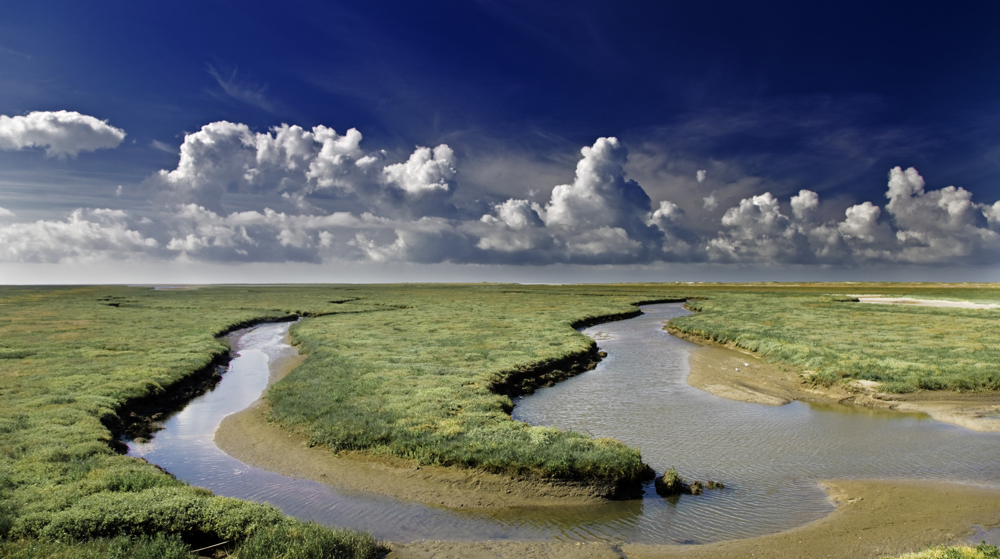

Exploring the Unrivaled Beauty: The Majesty of Africa's Savannah
Written by
Stretching across vast expanses of Africa, the savannah is a landscape of unparalleled beauty and diversity. Its sweeping grasslands, dotted with iconic acacia trees and framed by distant horizons, evoke a sense of both tranquility and adventure. Here, the rhythm of life beats to the pulse of nature itself, where lions roam the golden plains, elephants amble through towering grasses, and herds of antelope gracefully navigate their ancient migratory routes.
In the heart of the savannah, every sunrise paints the sky in hues of gold and orange, casting a soft glow upon the waking wilderness. As the day unfolds, the air fills with the symphony of wildlife—chirping birds, rustling leaves, and the distant call of predators. It's a place where time seems to stand still, offering a glimpse into a world untouched by the hurried pace of modern life. In the embrace of Africa's savannah, one discovers not only the raw power of nature but also a profound sense of harmony and interconnectedness that reminds us of our place in the greater tapestry of existence.